Brandneu aus den USA
Nach wie vor ist die Bereitschaft, für den C 64 Programme zu entwickeln, sehr groß. Das hat die größte Messe für Unterhaltungselektronik in Chicago wieder deutlich gezeigt.
Wer dem C 64 im Herbst letzten Jahres aufgrund der rückläufigen Verkaufszahlen ein schnelles Ende prognostizierte, sah sich bereits zum Weihnachtsgeschäft und in der ersten Hälfte des Jahres 1986 eines Besseren belehrt. Der C 64 erwies und erweist sich als VW Käfer — er läuft und läuft ... Die Tage eines 8-Bit-Systems sind bei weitem noch nicht gezählt. Neue Ideen, Anwendungen und billige Software lassen andere Perspektiven zu. Der kosmetisch gestylte C 64C (das C könnte für »cosmetic« stehen) erschließt sich zusammen mit dem leicht bedienbaren Betriebssystem GEOS eine neue Käuferschicht — potentielle Interessenten, die bisher noch vor der komplizierten Bedienung auch oder gerade eines Heimcomputers zurückschreckten. Das neue »offizielle« Betriebssystem für den C 64 ermöglicht es auch dem ungeübten Computerbenutzer, schnell und einfach die vielfältigen Möglichkeiten seines Systems auszunutzen. Durch die konsequente Fortführung der schon bei der Einführung des C 128 erkennbaren Strategie, die Kompatibilität mit dem weltweit 5 bis 6 Millionen Mal verkauften C 64 aufrechtzuerhalten, und so den Käufern neuer Heimcomputer von Commodore den Zugang zu der größten Softwarepalette für einen Computer zu ermöglichen, fällt einem die Entscheidung für einen 8-Bit-Heimcomputer wie dem C 64C leicht.
Auf der diesjährigen SCES (Summer Consumer Electronics Show) in Chicago wurde das Betriebssystem GEOS VL2 von Berkeley Softworks vorgestellt (ausführlichen Test der Version 1.0 siehe Ausgabe 6/86, Seite 19). Die Version 1.2 wurde in einigen Punkten verbessert. So konnte die seinerzeit bemängelte Geschwindigkeit des Textverarbeitungsprogramms geoWrite erheblich gesteigert werden. geo-Write ist ein sogenanntes »WYSI-WYG«-What You See Is What You Get-)Iextprogramm. Das heißt, der Text mit den verschiedenen Schriftarten, den eingebunden Grafiken, Unterstreichungen etc., sieht auf dem Bildschirm genauso aus, wie er später auf dem Papier ausgedruckt wird. Die bisher in geoWrite verfügbaren sechs Schriftarten können durch das auf der CES vorgestellte Font Pack 1 um weitere 20 ergänzt werden. Font Pack 2 und 3 sind bereits in Planung.
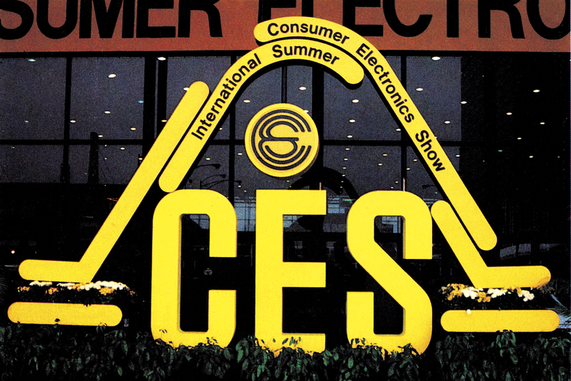
Das Grafikprogramm geo-Paint wurde jetzt um die Farbmöglichkeit erweitert. Alle 16 Farben des C 64 können für die Erstellung der Grafiken (siehe Bild 1) verwendet werden.
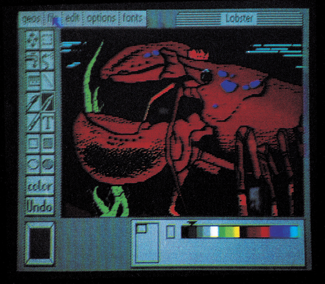
Bisher werden die Maus und der Joystick als Eingabegeräte verwendet. Bei der Commodore-Maus (bereits vor einiger Zeit angekündigt) gibt es offensichtlich noch erhebliche Entwicklungsschwierigkeiten. So war die gesamte Elektronik, die einmal im Mausgehäuse integriert werden soll, noch in einem überdimensionierten schwarzen Kasten untergebracht.
Durch zusätzliche kleine Programme — Eingabetreiber — sollen sich allerdings auch andere Eingabeeinheiten realisieren lassen. Demonstriert wurde am Stand eine Kamera von Digital Vision. Das von dieser Kamera gelieferte digitalisierte Bild läßt sich mit geoPaint weiterverarbeiten.
Mit dem ebenfalls gezeigten »Desk Pack 1« (Preis 39,95 Dollar) lassen sich Grafiken und Bilder von so verbreiteten Programmen wie PrintMaster, Print Shop und Newsroom in geoWrite oder geoPaint einbinden. Vorhandene Bibliotheken und Programme können also weiter sinnvoll benutzt werden.
Die Palette der unterstützten Drucker wurde erheblich erweitert. Mehr als 25 verschiedene Drucker können mittlerweile angesprochen werden; darunter Epson MX, FX, RX-80/100, JX-80 (Farbdrucker), Commodore 1525, MPS-801, 803, 1000, Okidata 120, Okimate 10, Microline 92, Panasonic KX-1090, Seikosha SP1000VC, Star SG-10/15, SG10C und sogar Laserdrucker. Da alle GEOS-Anwendungen über Druckertreiber (das heißt reine Software) auf die Drucker zugreifen, lassen sich andere Drucker ohne Anderung des Anwendungsprogramms leicht anpassen. So hat beispielsweise Wiesemann bereits verlautbart, daß ihr Interface 92000/G GEOS-kompatibel sei.
Gratis: DFÜ
An Druckertreibern für Laserdrucker wird intensiv gearbeitet. Da man nicht annehmen kann, daß die meisten Heimcomputerbesitzer einen Laserdrucker ihr eigen nennen können, wurdeeininteressantes Angebot über QuantumLink offeriert. Quantumlink ist eine Datenbank in den USA, die über Datenfernübertragung erreichbar ist und sich ausschließlich um die Belange der Commodore-Besitzer kümmert. Auf der Rückseite der GEOS-Diskette befindet sich die notwendige Telekommunkationssoftware, um mit Q-Link in Verbindung zu treten (ein Modem oder Akustikkoppler werden vorausgesetzt). Nun kann man sein mit verschiedenen Schriftarten und Grafiken kunstvoll erstelltes Dokument per DFÜU an Q-Link schicken. Dort wird es auf einem Laserdrucker in hervorragender Qualität ausgedruckt und an den Einsender auf dem normalen Postweg zurückgeschickt.
Auch diese Software ist wieder voll auf den computerunerfahrenen Benutzer abgestimmt. Über einfache, verständliche Blockdiagramme lassen sich die vielfältigen Angebote erreichen und auch Programme aus Q-Link in den eigenen Computer laden (download). Ein Schritt in die richtige Richtung, weg von komplizierten Befehlssequenzen, die bisher sicherlich viele Benutzer vom intensiven Gebrauch einer Mailbox oder Datenbank abgehalten haben. Leider steht noch nicht fest, wann und in welcher Form Q-Link in Deutschland erscheint.
Ein Q-Link-Abonnement kostet 9,95 Dollar im Monat. Die erste Stunde ist frei, jede weitere Betriebsstunde kostet 3,60 Dollar — die billigste uns bisher bekannte Datenbank. Und das Angebot kann sich sehen lassen.
So kann man sich jederzeit Rat bei kompetenten Fachleuten holen, oder sich eine vollständige Liste der User-Clubs ausgeben lassen.
Will man sich einfach einmal mit einem »elektronischen« Nachbarn unterhalten, der Tausende von Kilometern entfernt ist, so ist das online, das heißt direkt oder über die »Briefkästen« möglich.
Wer sich die neuesten Nachrichten aus aller Welt ansehen will, hat Zugang zu Reuters NewsView-Service Alle zehn Minuten wird diese Datenbank aktualisiert. Sie können sogar Ihre Kommentare zu den einzelnen Meldungen abgeben.
Ungewöhnliche Software
Wollen Sie einen Flug buchen, ein Hotel reservieren oder ein Auto mieten? Auch das läßt sich in dieser Mailbox und mit einer Kreditkarte arrangieren.
Preisvergleiche oder Bestellungen kann man im elektronischen Kaufhaus von Proteco Enterprises und Com-U-Store online anstellen.
Ab Herbst soll man auch ein bisher noch nie dagewesenes Simulations- und Abenteuerspiel von Lucasfilm namens »Habitat« erleben können. In »Habitat« kreieren und steuern die Teilnehmer eigene Charaktere, die sich in einer sich ständig erweiternden und verändernden Welt bewegen. Dort können Sie ihrer Fantasie freien Lauf lassen und Intrigen spinnen. Man spielt hier immer online gegen andere Anrufer beziehungsweise deren Charaktere der Q-Link-Datenbank. Die einzelnen Szenen werden auf dem Heimcomputer in Farbe und mit Tonuntermalung wiedergegeben.
Spielt man lieber Bridge, Schach oder Backgammon, so ist auch das möglich. Allerdings nicht wie sonstüblich gegen den Computer, sondern gegen andere, menschliche Teilnehmer von Quantumlink.
Ein Service erscheint besonders kundenfreundlich., Man kann sich die neuesten auf den Markt kommenden Spiele in einer Testversion auf den eigenen Computer holen und ausgiebig begutachten. Eine teure Fehlentscheidung beim Kauf läßt sich so fast ausschließen. Namhafte Hersteller wie Activision, Electronic Arts, Broderbund, Epyx und andere haben sich entschlossen, an diesem Service teilzunehmen.
Auch ein solides Angebot von »Public Domain«-Software ist integriert. Ein Blick in diese speziell auf Commodore zugeschnittene Datenbank lohnt sich auf jeden Fall.
GEOS wird erweitert
An drei neuen Programmen für GEOS wird momentan bei Berkeley Softworks gearbeitet: geoCalc, ein Tabellenkalkulationsprogramm; geoData, ein Datenverwaltungsprogramm; und Page Set, ein Ganzseitenlayoutprogramm für die eigene Zeitungserstellung.
Eine Entwicklerkonferenz der wichtigsten Software-Hersteller in den USA fand während der Messe statt. Laut Brian Dougherty, President von Berkeley, haben die Dritthersteller großes Interesse daran bekundet, bestehende Software an GEOS anzupassen oder neue Software für GEOS zu schreiben. Im Herbst soll das »GEOS Programmers Reference Manual« veröffentlicht werden, damit jeder Anwender Software für das neue Betriebssystem schreiben kann.
Low-Cost-Computer
Trotz des neuen Aussehens und des neuen Betriebssystems bleibt der C 64C ein relativ einfacher Computer in einem Markt, der sich an immer mehr Speicher, größerer Arbeitsgeschwindigkeit und mehr Prozessorleistung orientiert.
Aber wenn heute jemand nach einem geeigneten Einstiegscomputer sucht, so hat der C 64C viele Vorteile. Er ist einer der preiswertesten Computer auf dem Markt (Peripherie-Geräte und Software eingeschlossen). Mit dem neuen Betriebssystem GEOS bietet er eine symbolgesteuerte Benutzeroberfläche, wie sie nur auf wesentlich teureren Computern wie dem Macintosh, dem Amiga oder dem 520 ST zu sehen sind. Und schließlich sinddanoch die5bis 6 Millionen C 64-Besitzer, die man wohl nur sehr schwer ignorieren kann. Das bedeutet auch, daß nach wie vor jede Menge neue Software für diesen Computer entwickelt wird.
Eine wahre Flut an neuer Software gab es aufder SCES zu bewundern. So stellte beispielsweise allein Electronic Arts 21 neue Programme vor (12 davon für den C 64/C 128).
Darunter befindet sich das erste Textabenteuerspiel von Electronic Arts, Amnesia (39,95 Dollar). Man findet sich in einem fremden Hotelzimmer in Manhattan wieder, ohne Kleider, Geld und Erinnerung, wer man ist und wie man dorthin gekommen ist. Das Ziel ist, seine Identität zu entdecken. 1700 Wörter, 4000 einzelne Punkte, 650 Straßen und das gesamte U-Bahnsystem von Manhattan sind integriert.
Mit Chessmaster 2000 (39,95 Dollar) stellte Electronic Arts nach eigenen Angaben das bisher stärkste Schachprogramm für Personal Computer vor. Für Schachspieler: Chessmaster 2000 wurde von der U.S. Chess Federation mit 2018 Punkten bewertet (Sargon III erhielt 1850 Punkte). Die Eröffnungsbibliothek dürfte mit 71000 Positionen die umfangreichste bisher veröffentlichte sein. Zwölf Spielstärken stehen zur Verfügung. Das Brett kann entweder zwei- oder dreidimensional dargestellt werden, wobei sich die Blickrichtung verändern läßt. Dieses Schachprogramm wird es ab dem Sommer '86 auch für den Amiga geben.
»Bard's Tale«-Freunde dürfen sich freuen: Die Fortsetzung "The Archmage"s Tale« (mit sieben Städten statt bisher mit einer) wurde für den frühen Herbst angekündigt.
Weitere neue Titel von ECA sind Mind Mirror, ein psychologisches Beziehungsspiel und Scavanger Hunt, das erste Familien-Karten-Computerspiel. In Amerika vertreibt Electronic Arts noch einige andere Programme, die in Deutschland nicht erhältlich sein werden: Ultimate Wizard, Ogre, Moebius, Battle Front und Autoduel.
Auch Activision zeigte sich rege bei der Vorstellung neuer Programme. So wird es für den GameMaker demnächst einige Zusatzdisketten unter dem Titel »The Libraries« geben, mit denen man dann Sport- und Science-Fiction-Spiele entwerfen kann. Gerade bei den Sportspielen hat sich Activision sehr stark engagiert. So wird es das momentan auf dem IBM-PC für Furore sorgende Golfspiel »Championship Golf« im Winter auch für den C 128 geben. Championship Baseball '86 wird im August für den C 64 kommen.
Die Hacker-Fans kommen mit »Hacker II: The Doomsday Papers« (Bild 3) aufihre Kosten. Eine neue Aufgabe, die nur richtige Hacker lösen können. Hakker war das meistverkaufte Spiel im Jahre 1985, Hacker II könnte sich anschicken, der Renner '86 zu werden.
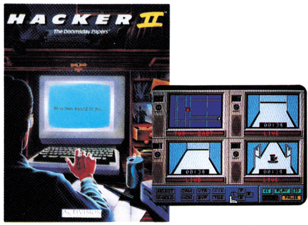
Infocom — vor kurzem durch Activision aufgekauft — stellte mit »Leather Goddesses of Phobos« das erste Sex-Abenteuer- spiel in ihrer Adventure-Serie vor. Sie werden von Fremden entführt und auf den Marsmond Phobos verfrachtet. Diese benötigen Sie für sexuelle Experimente, die der Vorbereitung einer Invasion der Erde dienen, um diese zur Spielwiese der »Ledergöttin« zu machen. Mitgeliefert wird ein»kurvenreiches« 3D-Comicbuch und eine Rubbel- und Riechkarte.
Einfluß auf die Weltgeschichte können Sie bei »Trinity«e nehmen. Durch Zeitreisen gelangen Sie bis zum 16. Juli 1945, kurz vor der ersten Atombombenexpolison in der Wüste von New Mexico. Sie bestimmen durch Ihre Handlungen den weiteren Fortgang der Atombomben-Entwicklung. Trinity wird es nur für den C 128 für 39,95 Dollar geben.
Epyx setzte seine erfolgreiche Summer-und Winter-Games-Serie mit den »World Games« (Bild 4) fort. Man besucht als internationaler Athlet acht Länder und führt deren nationale Sportarten aus. So springt man in Mexiko von hundert Meter hohen Klippen in flaches Wasser, in den USA reitet man einen elektrischen Bullen, und in Japan betätigt man sich als Sumo-Ringer. Bei »Super Cycle« (Bild 5) folgte Epyx dem Trend in den Spielhallen und entwickelte eine Motorradrenn-Simulation. Die Animation istso gut gelungen, daß man bei weiterer Realitätssteigerung fast eine Vollkasko-Versicherung für den Fahrer empfehlen könnte. Handgreiflich geht's bei »Championship Wrestling« (Bild 6) zu. Hier werden auch die Show-Einlagen bewertet. Epyx arbeitet intensiv an der Umsetzung ihrer Programme für den Amiga und den AtariST. Als Beispiel sei das in Bild 7 gezeigte Abenteuerspiel »Rogue« angeführt. Hier kommen natürlich die grafischen Darstellungsmöglichkeiten dieser Computer voll zum Tragen.
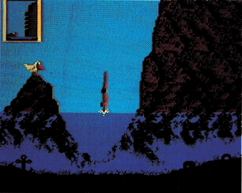
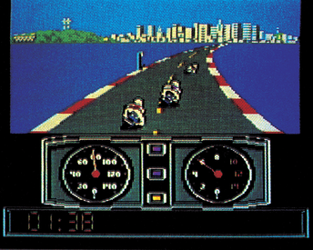
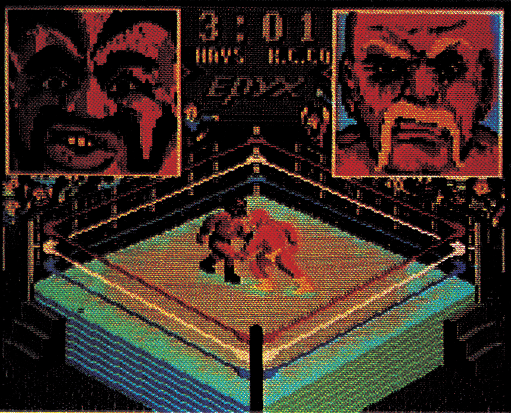
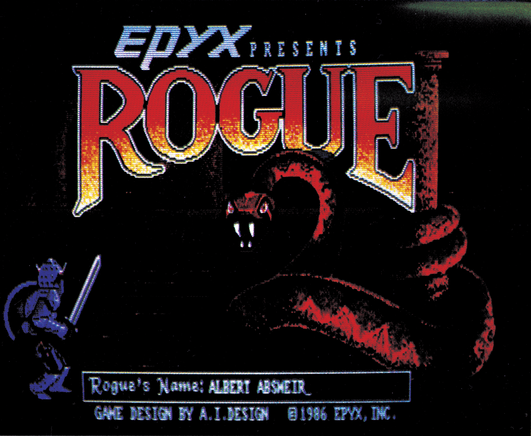
Software-Flut
Access hat sich trotz des Erfolges mit den indizierten Spielen Beach Head II und Raid over Moscow aufein weniger kriegerisches Feld zurückgezogen. Mit »lOth Frame« (Bild 8), einem Bowling-Simulator war ein äußerst gelungenes Spiel zu bewundern. Die Animation des Keglers kann man nur als fantastisch bezeichnen. 10th Frame wird 39,95 Dollar kosten. Leader Board, die Golf-Simulation von Access, wirdesdemnächst auch auf dem Amiga geben.
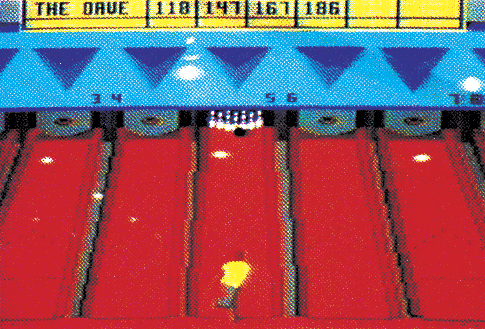
Springboard, berühmt und reich geworden durch das Zeitungsprogramm Newsroom, hat eine neue Idee geboren — ein Urkundenprogramm. Mit »Certificate Maker« (49,95 Dollar) lassen sich bisher 200 verschiedene Urkunden für die verschiedensten Anwendngen ausstellen. Von der Urkunde für den größten Fisch (Bild 9) über die Tennismeisterschaft biszum Partylöwen reicht die Palette. Für die Besitzer von Print Shop und Print Master gibt es jetzt auch einen »Graphics Expander« (34,95 Dollar). Nun kann man sehr leicht eigene Grafiken erstellen oder aus 300 bereitsintegrierten Grafiken auswählen.
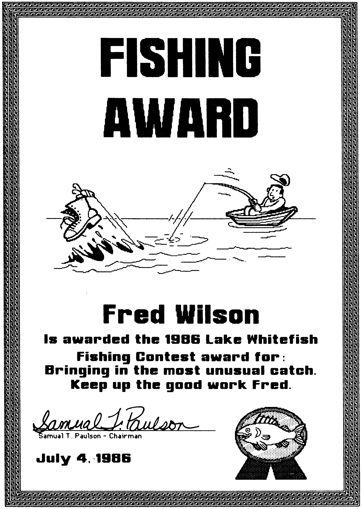
Eine neue Variante eines bekannten Programms wurde von Broderbund angekündigt. »Where in the USA is Carmen Sandiego% (Bild 10) ist die Fortsetzung zu »Where in the World ...« wird zusammen mit einem ausführlichen Reiseführer für die Vereinigten Staaten ausgeliefert. Spielspaß und Lerneffekt werden so aufideale Weise miteinander verbunden.
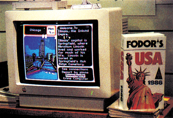
Die Anhänger von Donald Duck und Mickey Mouse könnennunmitihren Helden eigene Comic Strips und Grußkarten zeichnen. »Walt Disney Comic Stip Maker« (Bild 11) von Bantam wird im Herbst kommen. Speziell für den C 128 in seinem eigenen Modus waren einige sehrinteressante Produkte zu sehen. »Trio« (Bild 12) von Softsync ist ein gutes Beispiel. Es ist nach Aussagen von Softsync das erste, voll in Maschinensprache geschriebene Programm für den C 128, das dessen Fähigkeiten voll ausnutzt. In Trio sind ein Textverarbeitungsprogramm, ein Dateiverwaltungsprogramm und eine Tabellenkalkulation alsein Paket vorhanden. Die Daten zwischen den einzelnen Programmen können voll ausgetauscht werden. Die Geschwindigkeit in den Teilprogrammen reicht auch für geschäftliche Anwendungen aus. Diese integrierte Software gibt es bereits seit einiger Zeit für den Apple II und soll für diesen Computer ein Renner sein.
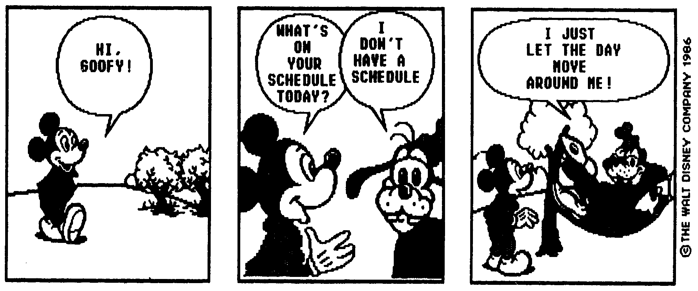
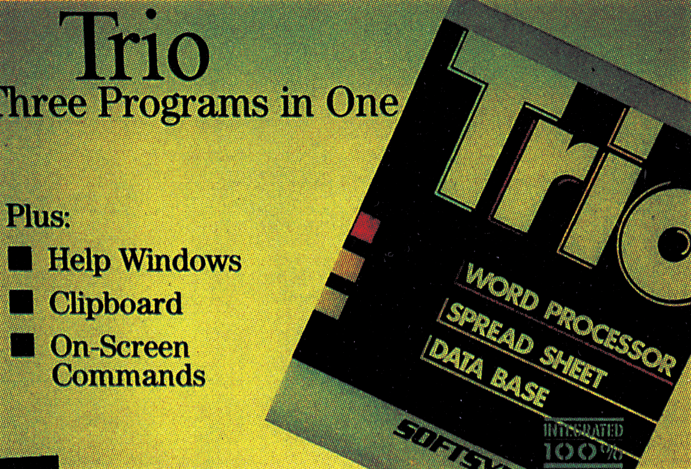
C 128-Special
Auch Timeworks hat sich im Bereich der Software für den C 128 stark engagiert. Die Qualtität der Programme ist überzeugend. So sind zum Beipiel im Tabellenkalkulationsprogramm »SwiftCalc 128« dreidimensionale Grafiken in HiRes möglich und.der Austausch von Daten mit den separat angebotenen Programmen »Word Writer 128« und »Data Manager 12& ist ebenfalls vorgesehen. Mit »Partner 128« (69,95 Dollar) wurde das Konzept von Sidekick für den IBM-PC auf den C 128 übertragen. Dieses Programm verbirgt sich praktisch im Untergrund und kann jederzeit während der Arbeit mit einem anderen Timeworks-Programm aufgerufen werden. Enthalten sind ein Terminkalender, ein Notizbuch, eine Telefon- und Adressenliste, ein Taschenrechner, eine»Schreibmaschine«, ein Adreßaufkleber-Programm, etc.
Die für hochwertige Anwendersoftware bekannte kanadische Firma Batteries Included hat die Bestseller PaperClip I und HomePak vollan den C 128 angepaßt. Bemerkenswert dabei: Batteries Included verzichtet ganz auf den Kopierschutz. Das heißt, die Erstellung von Sicherheitskopien für den Heimgebrauch und die Arbeit mit den Programmen wird nicht mehr durch benutzerunfreundliche Verschlüsselungsmethoden eingeschränkt. Eine Einstellung, die zumindest bei Anwenderprogrammen Nachahmer finden sollte.
Voll auf die Gesundheit zugeschnitten ist das Modul »Bodylink« von Bodylog. Mit Hilfe dieses Moduls wird der C 64 zum muskelbildenden Trainingsgerät, zum Steßreduzierer und zur Überwachungsstation für die Gesundheit (Bild 13). Aufgenommen werden über verschiedene Sensoren die Temperatur, die elektrischen Impulse und der Schweißausstoß des menschlichen Körpers. Mit diesen Daten kann man nun verschiedene Programme für den Muskelaufbau, für die Muskelkoordination oder für die Reduzierung von Streß durchführen. Entwickelt wurden diese Programme nach Angaben von Bodylog zusammen mit Wissenschaftlern und Medizinern.
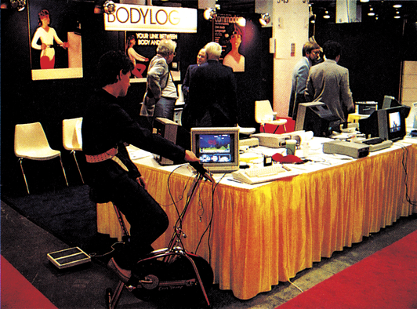
Auf die unterbewußte Wahrnehmung sollen die Programme von BCI einwirken. Während man am Computer arbeitet, werden für den Bruchteil einer Sekunde bestimmte Meldungen in der letzten Zeile eingeblendet. Bewußt nimmt man diese Befehle wie »Stop Smoking«, »Be Successful« und »Lose Weight« nicht wahr. Dennoch soll das Unterbewußtsein die Aufforderungen wahrnehmen und mit der Zeit auch befolgen. Professor Dr. James McCarthy, der Entwickler dieser Programme, glaubt fest an die Wirksamkeit dieser Methode. Wenn's stimmt, eine frohe Nachricht für alle Raucher, Erfolglose, Dicke und Gestreßte.
Wer keinen Job hat, kann sich nun computeruntstützt auf die Suche nach der idealen Beschäftigung machen. Die »Jobfinder«Serie (vier Programme zwischen 60 und 80 Dollar) von Compu-Job Software hilft bei der Auswahl des besten Angebots, der Erstellung von perfekten Bewerbungsschreiben, der Vorbereitung auf Bewerbungsgespräche und der Karriereplanung.
Das Entdecken von Marktlücken ist eben eine typisch amerikanische Eigenschaft, und auch mit der Arbeitslosigkeit läßt sich noch ein Geschäft machen.
Zukunft eingebaut
Mit der Entwicklung von immer neuen Programmen für die unterschiedlichsten Bereiche wie Unterhaltung, Anwendung oder Kurioses auf dem C 64 und C 128ist diesen Computern noch auf Jahre hinaus eine Existenzberechtigung gesichert. Obwohl sich die Software-Hersteller auch an den neuen 16-Bit-Systemen orientieren, haben sie den größten Markt für ihre Produkte — nämlich den der C 64- und C 128-Besitzer — nicht aus den Augen und nicht aus dem Sinn verloren. Die Computer der Zukunft werden vielleicht Atari ST und Amiga heißen, doch der Computer der Gegenwart ist und bleibt auf weiteres der C 64.
(aa)